Introduction
The pinhole camera (also called the "camera obscura") is essentially a dark box with a pinhole on one face, and a screen on the opposite face.
Light reflecting off an object is directed through the pinhole to the screen, and an inverted image of the object forms on the screen. The caveat is that it is hard to see the image formed with the naked eye. To be able to see the image, we used a digital camera with a long exposure time attached to the pinhole camera.
In this project, we built a pinhole camera using common crafting materials and experimented with different pinhole sizes and techniques. This webpage is a showcase of our procedure and our results.
Camera Design
We began with a large Amazon box, measuring roughly L48.5cm x W31cm x H38cm. We lined each of the inside walls with black construction paper and used glue dots to adhere the paper to the cardboard. We then used black electrical tape along the edges to make sure no cardboard was visible (running out of tape twice in the process). For the camera and the aperture, we measured and cut two holes, and created a "pocket" where we could store the apertures we wanted to test with.
The camera we used was a Canon EOS Rebel 5d DSLR with a 55-250mm lens. While taking the photos, we set the camera on 'bulb' mode and held the shutter down to manually control the exposure time. We chose to use such a large box because our camera was quite large, and we didn't have any smaller boxes where we could comfortably fit the camera without blocking the aperture too much.
Our pinhole camera, made out of an old Amazon box and gratuitous amounts of black construction paper. Features include a camera stand and a pocket for our various apertures.
Operating the pinhole camera. Our camera didn't have automatic shutter control, so one of us had to hold the shutter button down for the specified time while someone else kept the camera steady.
Aperture Size Test
We experimented with multiple different pinhole sizes, notably 0.1mm, 3mm, and 5mm apertures.
Here are the results of our experimentation. The first scene depicts the Peace Wall at the MLK Civic Center Park with a church in the background, and the other depicts the Allston/Milvia intersection in Downtown Berkeley.
0.1mm
3mm
5mm
Turns out, there's a mathematical way to estimate the best pinhole size for our box: it's a formula devised by mathematician Joseph Petzval in the late 1800s. If we calculate our optimal aperture using this formula:
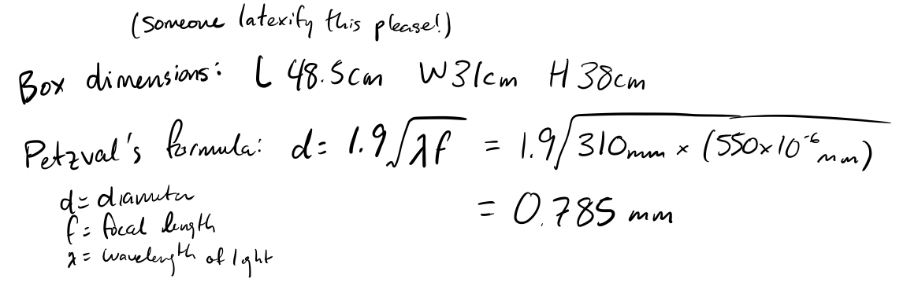Even though the 0.1mm aperture is very close to our optimal aperture diameter, we were not able to produce any decently-lit images with it. As a result, we decided to use the 3mm aperture for our additional photos.
Another thing to note is that as the apertures get larger, the images become more blurry. This makes sense, as a larger aperture means more light from multiple angles is coming in, which in turn causes bluriness. We can see how clear and focused the 0.1mm images are actually - here they are with some post-processing done to brighten them up and show details.
0.1mm
With Postprocessing

Additional Images
These images were all taken using the 3mm aperture on our pinhole camera.
Bells and Whistles 1: Light Painting
We did some light painting
Bells and Whistles 2: Panorama
One of the supplementary "bells and whistles" we tried was a technique to take panorama photos.
We set the pinhole camera down on a flat surface, rotated it about fifteen degrees per photo, and used the same exposure time on each image (20s) to limit color variance. Here is the resulting panorama of Valley Life Sciences Building, composed of the cropped images overlaid on each other.
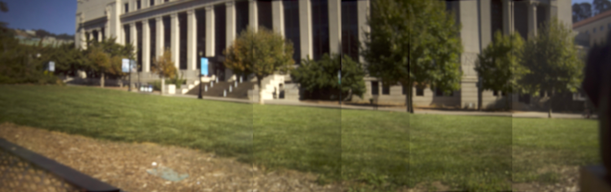When the image is stitched together properly (thanks, OpenCV), it looks a lot better:
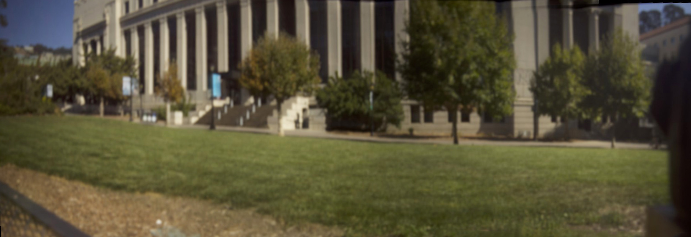Bells and Whistles 3: Stop-Motion Animation
Our second supplementary "bells and whistles" addition we tried was a technique to take photos for use in a stop-motion animation.
Much like the our technique for panoramas, we held the pinhole camera steady on a flat surface and used the same exposure time (17.5s) on each image. The result, after manually cropping and stabilizing each photo, is this .gif of Mesut spinning in circles:
| 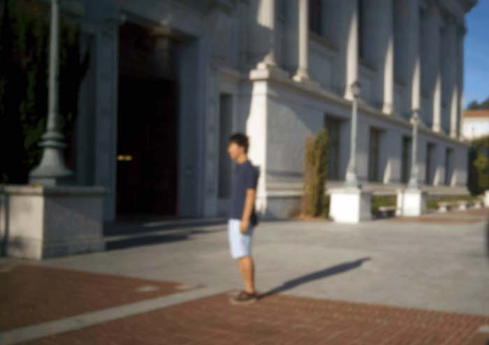 | 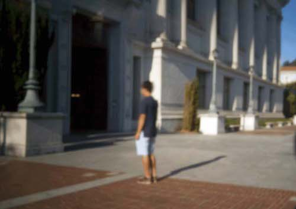 | 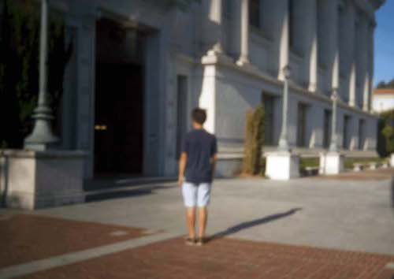 | 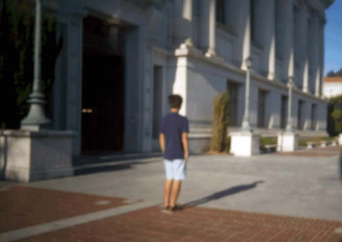 |
| 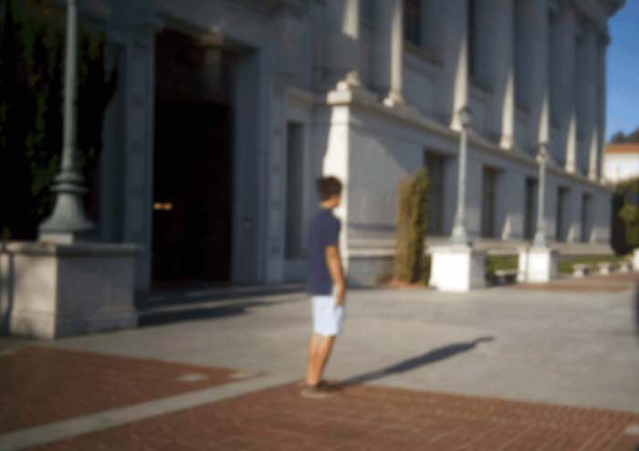 | 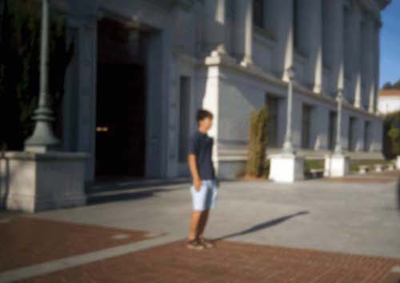 | 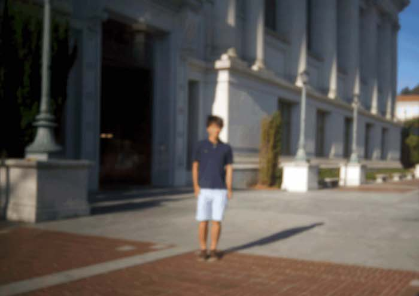 | 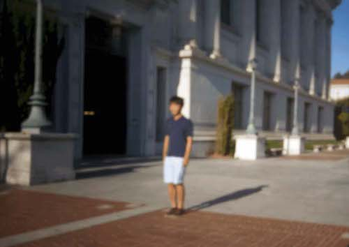 |